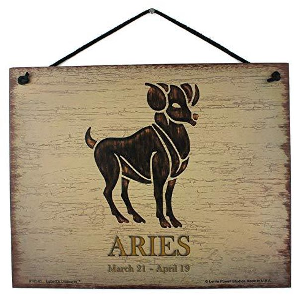
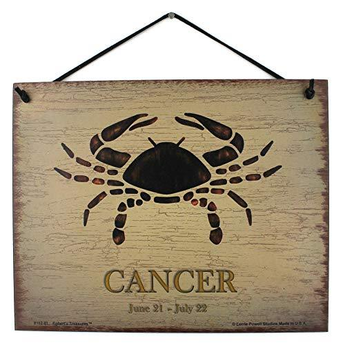
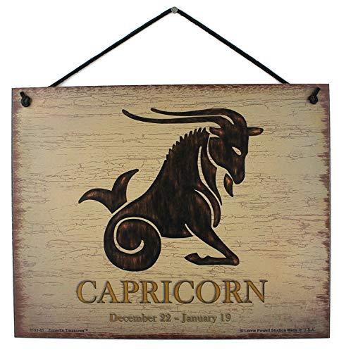
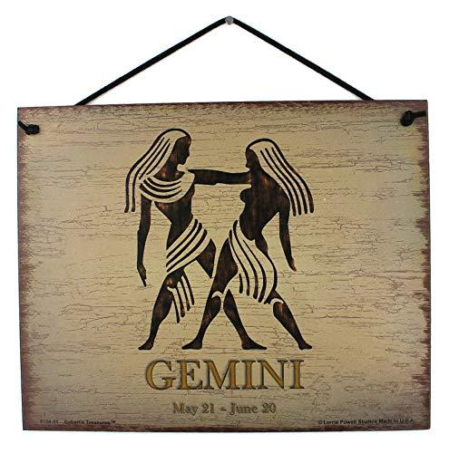
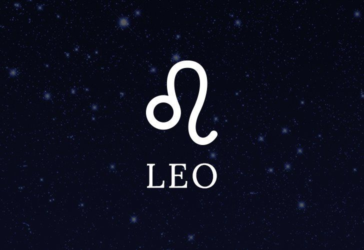
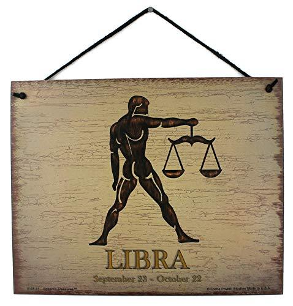
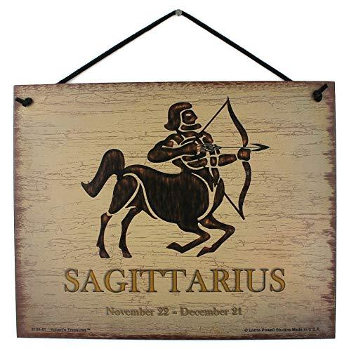
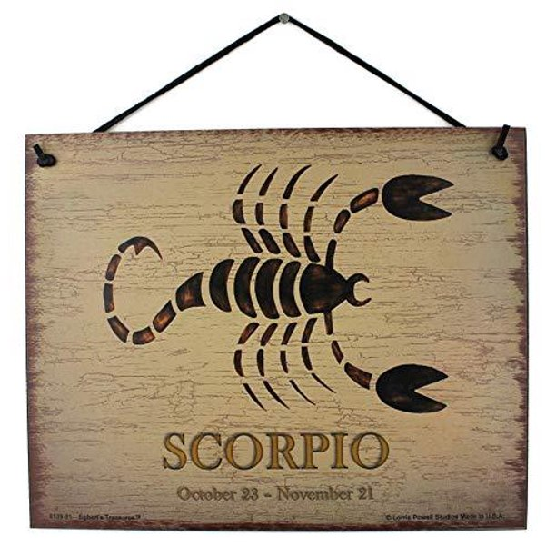
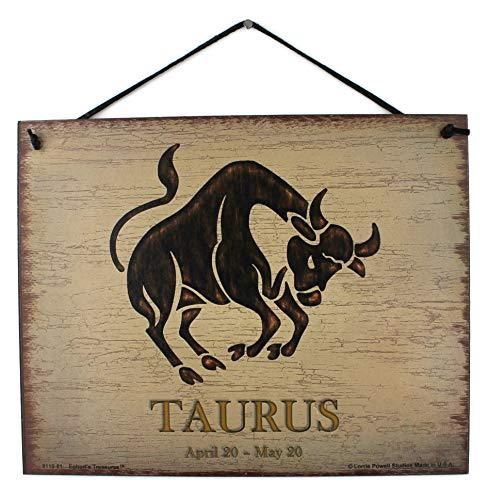

home
gallery
signup
contact us

Aries: March 21 – April 19

Cancer: June 21 – July 22

Capricorn: December 22 – January 19

Gemini: May 21 – June 20

Leo: July 23 -August 22

Libra: September 23 – October 22

Sagittarius: November 22 – December 21

Sorpio: October 23 – November 21

Taurus: April 20 – May 20
Zodiac Symbols & Their Meaning
Aries: March 21 – April 19 Aries loves to be number one, so it’s no surprise that these audacious rams are the first sign of the zodiac. Bold and ambitious, Aries dives headfirst into even the most challenging situations.
Taurus: April 20 – May 20 Taurus is an earth sign represented by the bull. Like their celestial spirit animal, Taureans enjoy relaxing in serene, bucolic environments surrounded by soft sounds, soothing aromas, and succulent flavors.
Gemini: May 21 – June 20 Have you ever been so busy that you wished you could clone yourself just to get everything done? That’s the Gemini experience in a nutshell. Appropriately symbolized by the celestial twins, this air sign was interested in so many pursuits that it had to double itself.
Cancer: June 21 – July 22 Cancer is a cardinal water sign. Represented by the crab, this crustacean seamlessly weaves between the sea and shore representing Cancer’s ability to exist in both emotional and material realms. Cancers are highly intuitive and their psychic abilities manifest in tangible spaces: For instance, Cancers can effortlessly pick up the energies in a room.
Leo: July 23 -August 22 Roll out the red carpet because Leo has arrived. Leo is represented by the lion and these spirited fire signs are the kings and queens of the celestial jungle. They’re delighted to embrace their royal status: Vivacious, theatrical, and passionate, Leos love to bask in the spotlight and celebrate themselves.
Virgo: August 23 – September 22 Virgo is an earth sign historically represented by the goddess of wheat and agriculture, an association that speaks to Virgo’s deep-rooted presence in the material world. Virgos are logical, practical, and systematic in their approach to life. This earth sign is a perfectionist at heart and isn’t afraid to improve skills through diligent and consistent practice.
Libra: September 23 – October 22 Libra is an air sign represented by the scales (interestingly, the only inanimate object of the zodiac), an association that reflects Libra's fixation on balance and harmony. Libra is obsessed with symmetry and strives to create equilibrium in all areas of life.
Sorpio: October 23 – November 21 Scorpio is one of the most misunderstood signs of the zodiac. Because of its incredible passion and power, Scorpio is often mistaken for a fire sign. In fact, Scorpio is a water sign that derives its strength from the psychic, emotional realm.
Sagittarius: November 22 – December 21 Represented by the archer, Sagittarians are always on a quest for knowledge. The last fire sign of the zodiac, Sagittarius launches its many pursuits like blazing arrows, chasing after geographical, intellectual, and spiritual adventures.
Capricorn: December 22 – January 19 The last earth sign of the zodiac, Capricorn is represented by the sea goat, a mythological creature with the body of a goat and the tail of a fish. Accordingly, Capricorns are skilled at navigating both the material and emotional realms.
Aquarius: January 20- February 18 Despite the “aqua” in its name, Aquarius is actually the last air sign of the zodiac. Aquarius is represented by the water bearer, the mystical healer who bestows water, or life, upon the land. Accordingly, Aquarius is the most humanitarian astrological sign.
Pisces: February 19 – March 20 Pisces, a water sign, is the last constellation of the zodiac. It's symbolized by two fish swimming in opposite directions, representing the constant division of Pisces' attention between fantasy and reality. As the final sign, Pisces has absorbed every lesson — the joys and the pain, the hopes and the fears — learned by all of the other signs.